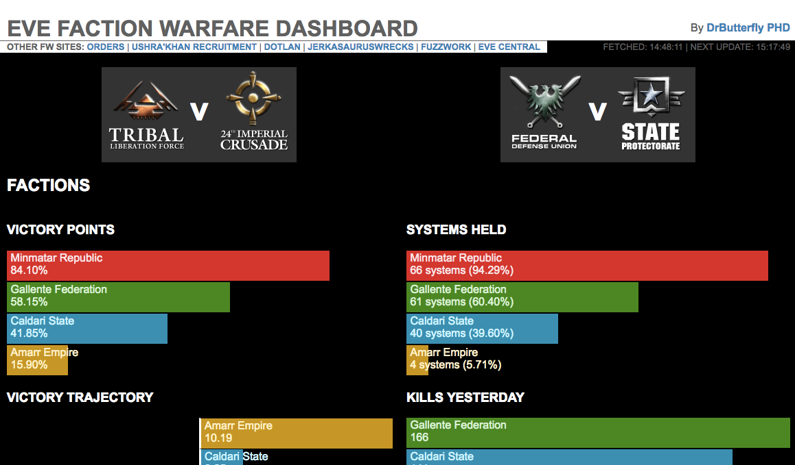
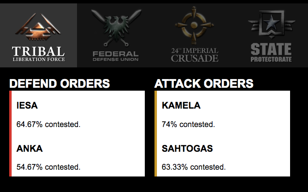
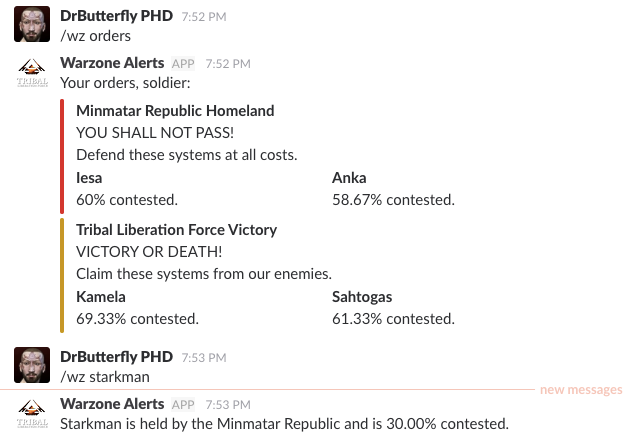
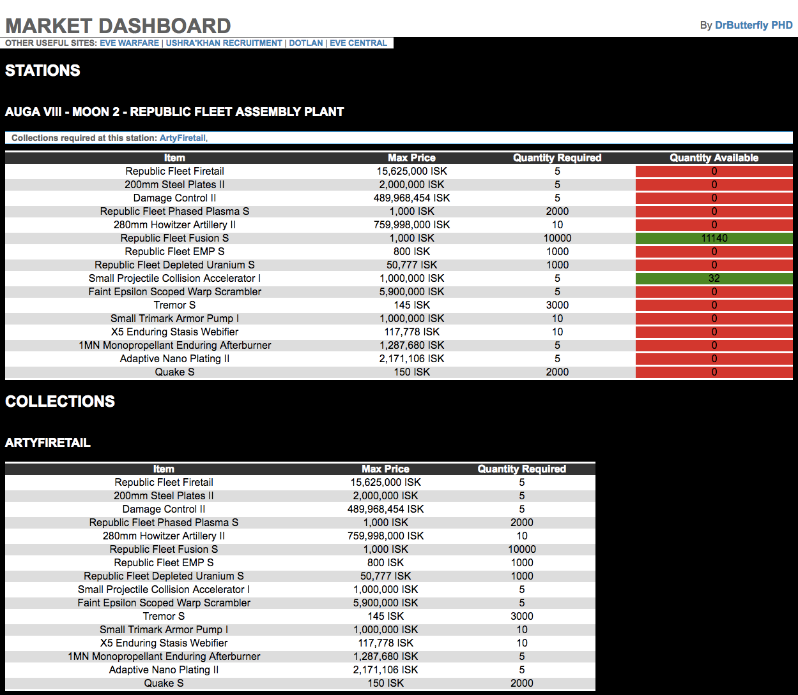

Help Documentation
Index
What is evewarfare.com?
This site is dedicated to supporting Eve Faction Warfare players and player groups. It consists of:
- A front dashboard offering a range of warfare statistics from the overall performance of each faction and Loyalty Point exchange rate metrics, right down to the current ownership and contested status of each system.
- An orders dashboard offering at-a-glance data on the most contested systems for each faction.
- A Slack integration offering contested status of systems and the top contested systems via slash commands.
- A market management tool, also integrated into Slack, that enables you to generate dashboards monitoring levels of specific items for sale at specific stations to keep your group supplied with the ships, fittings and ammo they need.
Use the instructions on this page to help you set up and make use of these features.
What does the main dashboard show?
The main dashboard aims to provide up to date data anybody with an interest in faction warfare. This includes FW players, those interested in joining faction warfare, traders and industrials dealing in faction products and anybody else with an interest in the progress of the wars. Filters at the top of the page enable you to filter the visualizations to show either warzone individually or both together.
Faction Warfare data is updated by Eve's API once an hour and the time of the next update is shown in the top right of the page. The page will automatically refresh as new data becomes available.

The dashboard includes the following reports:
- Victory Points
- The percentage of the total number of victory points available to the faction that they currently hold. This takes into account the contested level of all systems the faction is defending or attacking.
- Systems Held
- The percentage of the total number of systems available to the faction that they currently hold. Note that the Minmarr warzone is significantly smaller than the Galldari warzone, so each system counts for a larger percentage of the total warzone.
- Victory Trajectory
- The difference between victory point percentage and systems held. A higher victory trajectory means that the faction has greater opportunity to capture more systems in future. Note that it is easier for losing factions to achieve a higher victory trajectory as they have victory points spread out over a larger number of systems held by their enemies.
- Kills Yesterday
- The number of kills made by that faction yesterday. Gives an approximate indication of the size and activity of the faction.
- LP Exchange Rate (Immediate)
- Based on the best available buy order price in Jita for 100 items. Intended to give an approximation of the maximum ISK a player might expect to get if selling to buy orders, or using sell orders for goods that sell relatively quickly. This is not intended to give a recommendation as to what the player should sell.
- LP Exchange Rate (Delayed)
- Based on the best available sell order price in Jita for 100 items. Intended to give an approximation of the maximum ISK a player might expect to get if using sell orders for goods that take a long time to sell. This metric should be considered a very optimistic maximum and used with caution.
- Estimated Isk Per Outpost
-
Listed for both immediate and delayed LP exchanges rates. Gives an indication of the maximum ISK a player might make from capturing an enemy held novice outpost on their own. The tier level used in this calculation is based on the number of systems held as data about system tiers is not available via API. For this reason, the tier level may not be accurate. Note that the LP gain per outpost (and therefore potential ISK payout) is significantly greater for larger sites, but is lower when running defensive sites and when sharing LP with other pilots.
- Regions
-
Shows faction warfare statistics for each region in the warzone. For each region, the top half of the bar shows the split of systems held by each faction and the bottom half shows the split of victory points.
- Constellations
-
Shows faction warfare statistics for each constellation in the warzone. For each constellation, the top half of the bar shows the split of systems held by each faction and the bottom half shows the split of victory points.
- Systems
-
Shows the contested level for each system in the warzone, in order of contested level. For vulnerable systems, we are able to shows percentages higher than 100% to show the current buffer achieved for that system (data which is not availble in game).
What does the orders dashboard show?
The orders dashboard shows a streamlined view of the top contested systems for each faction, two that they own and two owned by their enemies. It is intended to give an at-a-glance view for faction warfare pilots to show them where they are needed. It can also be used to keep up to date with the status of key systems when they are out of Eve.

The dashboard includes the following reports:
- Attack Orders
- The top two contested systems held by the faction's enemy.
- Defend Orders
- The top two contested systems held by the faction.
What Slack commands can I use to access Faction Warfare stats in Slack?
If your Slack administrator has installed the evewarfare.com Slack integration, you can use the following slash commands to access faction warfare data from your Slack channels.
- /wz [orders] [name of faction]
- Responds with a summary of the most contested systems for the faction. Defaults to Minmatar.
- /wz [name of system]
- Responds with the current owner and contested level of the system.

How does the market management tool work?
The market management tool consists of two components: a Slack integration that is used to define the items required by a player group at specific stations and a market dashboard that displays those requirements alongside current quantities available. It is intended that the Slack integration be restricted to a limited group of trusted people, while the dashboard can be shared more widely to those who might supply the required items.
The owners of the dashboard uses the Slack integration to define collections of items and then specifies the stations where these collections are required at. The intention is that each collection represents the ships, fittings and ammo required to support a particular doctrine. For example one collection might include a number of combat ships of the same type, plus a couple of logistics ships. Collections will also normally include more ammo than needed for the initial ship fit so that players who use their ammo without losing their ship can renew their supply.
Once defined, collections can be assigned and re-assigned to different stations. This allows the dashboard owners to quickly change which station(s) they need the items available at in the event that they need to deploy out of a different station.
Are citadels supported by the market management tool?
No. Only stations are currently supported. Feel free to reach out to DrButterfly PHD to discuss an ISK donation in the context of developing support for citadels. Due to the nature of citadels, getting market data is a little more complex than for stations.
What do market dashboards show?
If somebody using the evewarfare.com market management tools has provided you with a link to a market dashboard, it should take you to a dashboard like the one below.

The dashboard lists details for each of the stations items are required at, plus details of what each collection (including un-used collections) consists of. Each station table has the following columns (collection tables have the same columns except 'Quantity Available').
- Item
- The name of the item required.
- Max Price
- The maximum sell order price that the item is required at. Sell orders above this price are ignored.
- Quantity Required
- The number of items required. Where multiple collections required at the station require the same item, this number will be the combined quantity required for all collections.
- Quantity Available
- The number of items for sale at or below the maximum price. This column will be shaded based on the percentage of required items available with red indicating 0%, yellow indicating 50% and green indicating 100% (or greater), with a gradient of color between those values.
What Slack commands can I use to manage my market dashboard?
You can use the following slack commands to define collections, require them at stations and generate market dashboard links.
- /wz collection [nameOfCollection] add [name of item] [quantityToAdd] [maxPrice|"Jita"]
- Adds the specified quantity of the specified item to a new or existing collection. Collection names must not contain spaces and are case insensitive (it doesn't matter if you use capital letters). The max price can either be a number or the word "Jita" to set the price based on current Jita prices. Adding more of an item that already exists will update the price for all items in the collection. It is not possible to have two different prices for the same item in a collection.
- /wz collection [nameOfCollection] addZKill [zKillboardKillURL] [quantityToAdd]
- Adds all the items from a specified zKillBoard kill URL (copy and paste the complete url of a kill, e.g. "https://zkillboard.com/kill/62091070/"). The quantityToAdd determines how many multiples of the kill to add, for example if a killed ship contained 2000 Phased Plasma S and the required quantity was 3, then 3*2000=6000 Phased Plasma S would be added. Items added by kill URL always use current Jita prices, even if the item already exists in the collection with a different price. This command enables you to quickly add doctrine ships to a collection. You can then use further commands to tweak prices and amounts.
- /wz collection [nameOfCollection] update [name of item] [maxPrice|"Jita"]
- Updates the price of the specified item. This works in exactly the same way as adding 0 of an item to a collection.
- /wz collection [nameOfCollection] updateAll
- Updates the price of all items in the collection using current Jita prices.
- /wz collection [nameOfCollection] remove [name of item] [quantityToRemove]
- Removes the specified quantity of the specified item from the collection. Set the quantityToRemove to 0 to remove the item completely.
- /wz collection [nameOfCollection] list
- Returns a list of the items in the collection.
- /wz collection [nameOfCollection] empty
- Removes all items from the collection.
- /wz collection [nameOfCollection] delete
- Deletes the collection.
- /wz market require [nameOfCollection] [name of station]
- Requires the collection at the specified station. You will need to use the exact full name of the station e.g. "Auga VIII - Moon 2 - Republic Fleet Assembly Plant". You can copy-paste station names from dotlan. Collections can only be required once at each station and changes to the collection immediately effect the items required at each station requiring that collection.
- /wz market cancel [nameOfCollection] [name of station]
- Removes the requirement for the collection to be available at that station.
- /wz market get [name of station]
- Returns a list of collections and items required at the station across all collections, with the quantities required and remaining for each item. This command will re-cache all prices before returning the list and may time out for stations requiring a large number of items. If this happens, just run the command twice - once to refresh the cache and once to fetch freshly cached the data.
- /wz market dashboard [expiry duration]
- Returns a link to the market dashboard for the current Slack channel which will expire after the specified duration, or "+30 days" if you omit this parameter. The expiry duration can be used to create short-lived links to the dashboard for people that you don't want to have long term access. If you don't want the url to expire, set the duration to a long duration such as "+1000 years". This command will re-cache all prices before returning the list and may time out for stations requiring a large number of items. If this happens, just run the command twice - once to refresh the cache and once to fetch the link to the freshly cached the data.
- /wz market expire
- Immediately deactivates all links to the Slack channel's market dashboard. Use this if you think your market dashboard links may have been leaked to a spy.
Collections, station requirements and dashboards are created within the context of specific Slack channels and it is normally a good idea to create a Slack channel specifically for managing a particular market dashboard and restrict access to that channel to those you want to be able to manage the dashboard.
How do I install the Slack integration for my Slack team?
This is great! How can I donate isk?
To support the work of development on this app, please send ISK to DrButterfly PHD along with an in game mail listing what features of the application you're using.
Where can I find the code?
Code is available on Github and licensed Apache-2.0. If you do fork the repository, please contribute any improvements and additions back.
I want to build my own Faction Warfare tools. Can I use your APIs and PHP classes?
Yes. The applications includes a number of API resources that aggregate and process data from other sources that your application can hook into. If your application is PHP based, you may also be able to re-use some of the PHP classes supporting those API resources. Mail DrButterfly PHD in game if you are interested in spinning off any of the classes as submodules that our applications can share.
I'm developing my own application but struggling with APIs, can you help?
Yes. Especially if you are interested in paying ISK for that help. Mail DrButterfly PHD in game to discuss.